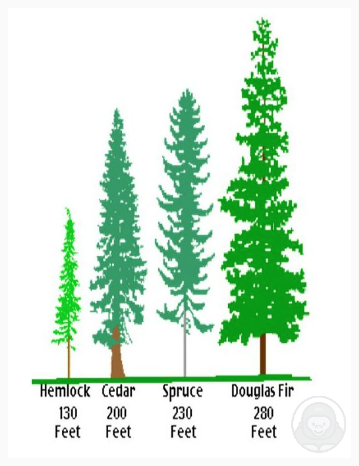

DI #7 · 分类：数据图

✅必说｜开场定题：This image shows information about [主题].
✅必说｜最高值：To begin with, the highest / largest value is [X], at about [数字].
✅必说｜最低值：In contrast, the lowest / smallest value is [Z], at about [数字].
➕选说｜次高值：Besides, the second highest is [Y], at about [数字].
✅必说｜趋势：Meanwhile, there is an increasing / decreasing trend from [起点] to [终点].
✅必说｜总结：In conclusion, this graph clearly shows [主题].
现场快说版：只按模板说方位/步骤 + 物品 + 颜色/数量，不背功能从句；卡壳就补背景（颜色/阳光/草地）。
This image shows information about the height of four tree species, measured in feet. To begin with, the highest value is Douglas Fir, at about 280 feet. In contrast, the lowest value is Hemlock, at about 130 feet. Besides, the second highest value is Spruce, at about 230 feet, and Cedar is about 200 feet. Meanwhile, there is a decreasing trend from Douglas Fir to Hemlock. In conclusion, this graph clearly shows the height of each tree species.
This image shows information about the height of four tree species. To begin with, the highest value is Douglas Fir, at about 280 feet. In contrast, the lowest value is Hemlock, at about 130 feet. Besides, the second highest value is Spruce, at about 230 feet, and Cedar is about 200 feet. Meanwhile, there is a decreasing trend in height, from Douglas Fir to Hemlock. In conclusion, this graph clearly shows the height of four tree species.
tree height / Hemlock / Cedar / Spruce / Douglas Fir / 280 feet / 230 feet / 200 feet / 130 feet / tallest / lowest / feet
练习建议：① 先背基础版（现场快说，保底）→ ② 再学进阶版（时间够再补功能从句）→ ③ 脱稿练习（不看原文自己说 3 遍）。